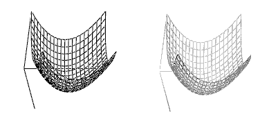
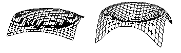

3D Plot Format Dialog Box (Advanced Tab) |
Shades the plot as if there were fog surrounding it. Makes distant parts of the plot appear dimmer to provide a depth cue. Plots are drawn more slowly with fog enabled.

In the example above the plot on the left has fog disabled; the plot on the right has fog enabled.
Makes a plot appear as if you were looking at it from a certain distance away in real life. Parts of the plot that are further away appear smaller than nearby parts of the same size. Specify the distance in the Viewing Distance text box.
Controls how tall the tall parts look. When VS is small, variations in the heights are barely perceptible. At 100, variations are such that the plot fills the entire frame.

In the example above the two plots are set at differing vertical scales. In the plot on the left the vertical scale is set to 20; on the right the vertical scale is set to 60.
Specifies the distance when Perspective is checked.
Forces the 3D plot to print using your printer resolution. Otherwise, the plot prints at 150 dpi.
Controls the printing default for all new 3D plots. Make sure "High Quality Printing" is set as desired, then check "Set as default." The printing information is recorded in the registry.
Note: This option never stays checked.
Higher values make the plot appear shinier when lighting is enabled on the Lighting page and the surface of the plot is filled on the Appearance page. A shinier surface reflects more specular light.
Higher values make the plot more transparent so you can see through it.
Distinguishes lines and a filled surface when lines are drawn and the surface of a plot is filled. If set to zero, the lines may appear to go behind the surface and cause a "stitching" appearance.
Applies the values in the selected colormap according to the x values, y values, or z values.
Specifies the colormap to use for fill, lines, and points if Colormap is checked for these three aspects on the Appearance page.